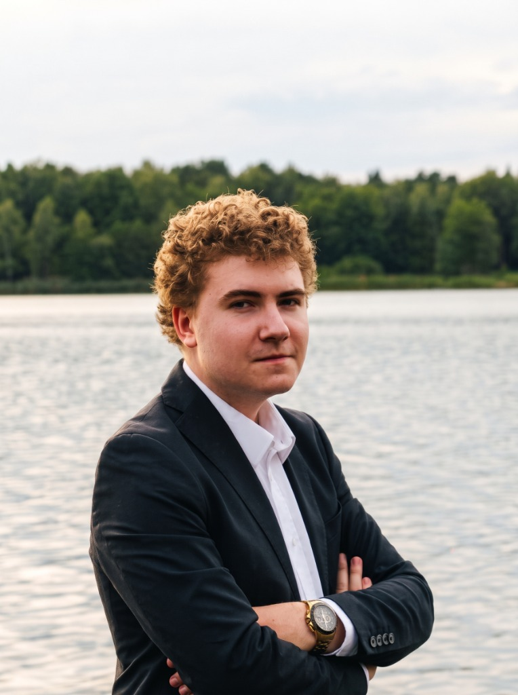
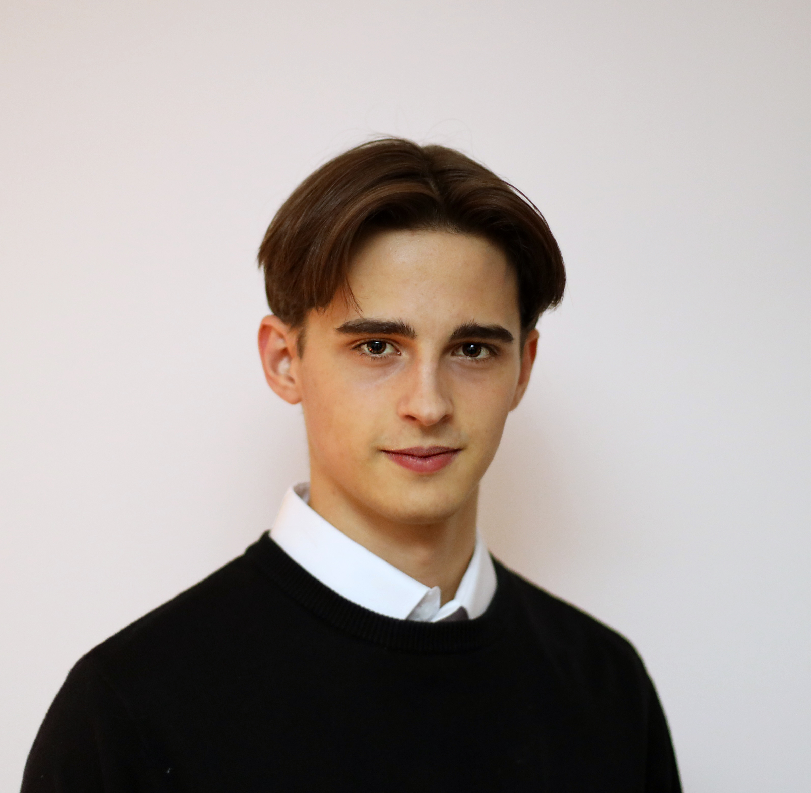
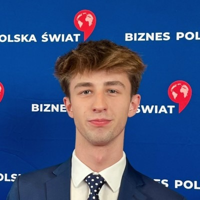
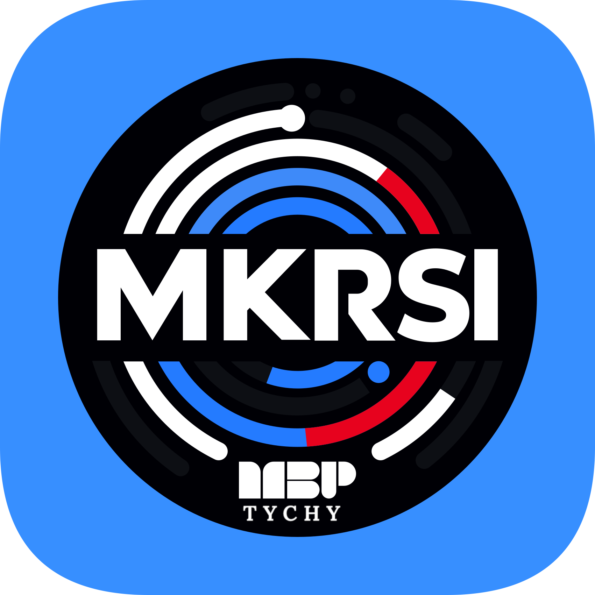

Nie jesteśmy tu z przypadku.
Fundacja to owoc lat realnego działania.
Fundacja BONSA nie powstała zza biurka. Zanim sformalizowaliśmy naszą działalność, przez lata działaliśmy lokalnie w Tychach: organizowaliśmy miejskie turnieje debat pod patronatem Prezydenta Miasta, prowadziliśmy warsztaty w Mediatece i łączyliśmy młodzież z całego Śląska.
Władze Fundacji

Seweryn
Kantor
Seweryn Kantor to związany z Tychami działacz społeczny, który w pracy fundacyjnej precyzyjne, analityczne podejście łączy z angażującym storytellingiem. Pasja do muzyki oraz międzynarodowe podróże ukształtowały w nim szerokie horyzonty, cierpliwość i umiejętność uważnego słuchania drugiego człowieka. Pełen empatii i profesjonalizmu, z łatwością buduje trwałe relacje łączące młodzież, urzędników oraz partnerów biznesowych.

Mariusz
Grabowski
Pomysłodawca i pierwszy lider Młodzieżowego Klubu Rozwoju (MKRSI) w Tychach. Jako główny koordynator trzech edycji Tyskiego Turnieju Debat Oksfordzkich z sukcesem przywrócił do lokalnych szkół tradycję merytorycznego i opartego na faktach sporu. Obecnie pełni funkcję Prezesa Zarządu Fundacji BONSA, gdzie odpowiada za planowanie strategiczne, budowanie partnerstw z jednostkami samorządowymi oraz prowadzenie dialogu z placówkami oświatowymi.

Bartosz
Mamok
Jako Wiceprezes Zarządu Fundacji Bonsa odpowiada za planowanie, negocjacje oraz dbanie o pełną klarowność procesów organizacyjnych. Jego największą siłą jest umiejętność dostrzegania wzorców i łączenia różnych obszarów działania, co pozwala mu skutecznie przekuwać wizje w realne projekty, takie jak szkolenia dla młodzieży. To charyzmatyczny i skuteczny lider, którego od zawsze napędza chęć rozwoju - zarówno własnego, jak i wspieranych przez niego osób.
Geneza Ruchu Obywatelskiego

W grudniu 2023 roku w Tychach powołaliśmy niezależną inicjatywę MKRSI. Zaczynając od otwartych paneli dyskusyjnych w czytelni Miejskiej Biblioteki Publicznej przy al. Piłsudskiego 16, zbudowaliśmy największą platformę debatancko-intelektualną dla młodzieży w regionie. Powołanie Fundacji Bonsa było naturalnym, profesjonalnym krokiem naprzód - dającym nam zaplecze prawne i finansowe do tworzenia stałych funduszy stypendialnych.
Geneza Nazwy i Logo
Nasza nazwa oraz identyfikacja wizualna nie są dziełem przypadku. Stanowią akronim pięciu fundamentalnych wartości naszej organizacji. W samym centrum układu umieściliśmy Naukę, która spaja wszystkie pozostałe filary, nadając naszym inicjatywom merytoryczny kierunek. To właśnie dlatego w nasze logo wpisany jest symbol otwartej książki - bezpośrednie nawiązanie do edukacji i wiedzy jako głównego fundamentu Fundacji BONSA.
Ścieżka Rozwoju
16 Września 2026 - Warsztaty „Szacunek między słowami”
EdukacjaW CEZ Centrum Edukacji Zawodowej w Tychach, Zosia Zdziebko i Bartek Mamok, poprowadzili samodzielne warsztaty. Spotkanie upłynęło pod znakiem dobrej energii, otwartości oraz nauki uważnego słuchania i rozmowy o sile wzajemnego szacunku.
Początek 2026 - III Tyski Turniej Debat Oksfordzkich
Kontynuacja Tradycji
Zorganizowany we współpracy z Młodzieżową Radą Miasta Tychy oraz MBP. Wzięli w nim udział uczniowie II Liceum Ogólnokształcącego im. C. K. Norwida, Zespołu Szkół nr 1, Zespołu Szkół nr 5 oraz TEB Liceum i Technikum. Wydarzenie ponownie zgromadziło przedstawicieli władz miasta, w tym wiceprezydenta Pawła Grosmana.
Czterodniowe zmagania zakończyły się zwycięstwem II Liceum Ogólnokształcącego im. C. K. Norwida. Relacja z turnieju ukazała się na łamach tygodnika Twoje Tychy (nr 17/962, s. 4).
Podsumowanie: Rok 2025 w liczbach
Nasz klub w minionym roku to naprawdę solidny kawałek pracy u podstaw:
11 Grudnia 2025 - Spotkanie z radnym
Dialog SamorządowyWydarzenie zorganizowane w ramach projektu „Młody Obywatel”. W budynku Urzędu Miasta Tychy, na sali obrad Rady Miasta, gościliśmy wiceprezydent Hannę Skoczylas, radnego Mikołaja Figlarskiego oraz przewodniczącą Młodzieżowej Rady Miasta Blankę Michalską.
Lipiec i Październik 2025 - Warsztaty „Młody Obywatel”
WyjazdyW lipcu, współpracując z Fundacją Europejski Instytut Outsourcingu, zorganizowaliśmy dla klubowiczów trzydniowe warsztaty w Zebrzydowicach skupione na liderstwie i negocjacjach. Następnie w dniach 20-22 października mieliśmy przyjemność uczestniczenia w projekcie „Młody Obywatel”, ponownie organizowanym przez Fundację EIO.
Czerwiec 2025 - Wizyta w Sejmie RP
Wizyta StudyjnaNa zaproszenie Pani Bożenny Hołowni mieliśmy okazję odwiedzić Sejm Rzeczypospolitej Polskiej. W ramach wizyty zwiedziliśmy najważniejsze części budynku, poznając jego historię. Szczególnym punktem programu była możliwość obejrzenia trwających obrad z perspektywy galerii sali plenarnej.
Maj 2025 - II Tyski Turniej Debat Oksfordzkich
Skala Miejska
W ostatnim tygodniu maja 2025 roku odbyła się trwająca cztery dni, druga edycja Turnieju. Wzięły w niej udział drużyny z II Liceum Ogólnokształcącego im. C. K. Norwida, Liceum i Technikum TEB oraz Zespołu Szkół nr 5.
Na widowni, obok uczniów, gościliśmy m.in. wiceprezydenta Tychów Pawła Grosmana oraz dyrektor MBP Annę Krawczyk. Dzięki uprzejmości Natalii Słomianny ukazała się oficjalna relacja z wydarzenia prasie (Tygodnik Twoje Tychy, nr 23/915).
21 Lutego 2025 - Warsztaty „Lider w akcji”
RozwójRok 2025 przyniósł naszemu klubowi wiele powodów do dumy. Mieliśmy okazję współpracować z Fundacją Europejski Instytut Outsourcingu, czego efektem były warsztaty „Lider w akcji”. Szymon Matyja, który je prowadził, pomógł uczestnikom rozwinąć kompetencje w zakresie negocjacji, pracy zespołowej oraz umiejętności miękkich.
Maj 2024 - I Turniej Debat Oksfordzkich
WydarzeniePierwszy Tyski Turniej Debat Oksfordzkich MKRSI odbył się zaledwie po trzech miesiącach działalności klubu. Wzięły w nim udział trzy tyskie licea ogólnokształcące: I LO im. Leona Kruczkowskiego, II LO im. C. K. Norwida oraz III LO im. Stanisława Wyspiańskiego. W trakcie turnieju mieliśmy okazję gościć znamienite osobistości, w tym prezydenta miasta Tychy - Macieja Gramatykę.
Grudzień 2023 - Powstanie MKRSI
Początki
Młodzieżowy Klub Rozwoju Społeczno-Intelektualnego powstał z inicjatywy trzech uczniów: Mariusza Grabowskiego, Seweryna Kantora oraz Bartosza Mamoka w grudniu 2023 roku.
Klub został założony we współpracy z Miejską Biblioteką Publiczną w Tychach, której główną siedzibą jest budynek Mediateki przy ulicy Piłsudskiego 16. W założeniu klubu pomogła Pani Aleksandra Pabian.
Dołącz do Rady Mecenasów
Poznaj nas osobiście w Tychach
Jako Zarząd Fundacji BONSA zapraszamy przedsiębiorców, przedstawicieli placówek oświatowych oraz mieszkańców do dialogu. Chętnie przedstawimy dotychczasowe raporty, plany stypendialne i możliwości zaangażowania.